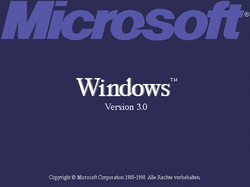
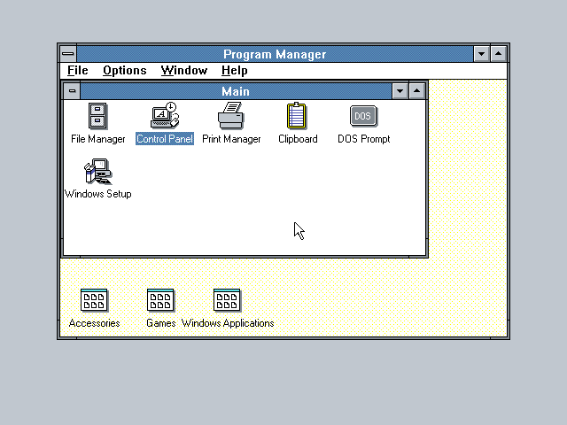

Windows 3.0

Wersja: Windows 3.0
Data premiery: 22 maja 1990
Architektura: 16-bit
Windows 3.0 był wielkim przełomem w historii systemów operacyjnych Microsoftu. Przyniósł interfejs oparty na ikonach i oknach, który był znacznie bardziej intuicyjny niż wcześniejsze wersje. Był to również pierwszy Windows z trybem chronionym, umożliwiającym lepsze zarządzanie pamięcią RAM.
Data premiery: 22 maja 1990
Architektura: 16-bit
Windows 3.0 był wielkim przełomem w historii systemów operacyjnych Microsoftu. Przyniósł interfejs oparty na ikonach i oknach, który był znacznie bardziej intuicyjny niż wcześniejsze wersje. Był to również pierwszy Windows z trybem chronionym, umożliwiającym lepsze zarządzanie pamięcią RAM.
🛑 UWAGA!!! Ten system operacyjny od dnia 31 grudnia 2001 r. nie jest już wspierany przez Microsoft.
Korzystanie z niego może wiązać się z zagrożeniem bezpieczeństwa oraz brakiem aktualizacji.

Korzystanie z niego może wiązać się z zagrożeniem bezpieczeństwa oraz brakiem aktualizacji.
🔧 Wymagania sprzętowe
- Procesor: 8086/8088 lub wyższy (zalecany 286 lub 386)
- Pamięć RAM: min. 384 KB
- Dysk twardy: około 6 MB wolnego miejsca
- Karta graficzna: EGA/VGA
- Stacja dyskietek 5.25" lub 3.5"
💽 Instrukcja instalacji
- Pobierz plik ISO klikając przycisk poniżej.
- Stwórz wirtualną maszynę z DOS-em (np. MS-DOS 6.22).
- Zamontuj plik ISO i uruchom instalator z poziomu DOS.
- Postępuj zgodnie z instrukcjami instalatora w języku angielskim.